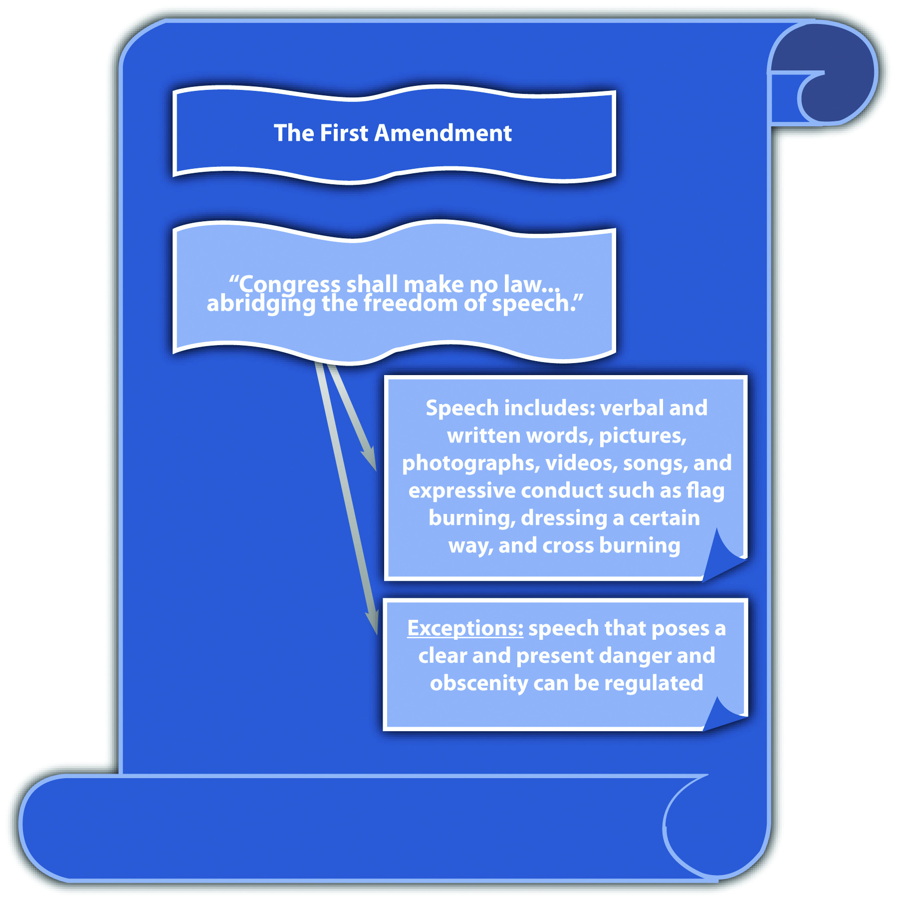

The First AmendmentProhibits the government from suppressing speech, which includes any form of expression or expressive conduct. states, in relevant part, “Congress shall make no law…abridging the freedom of speech.” Although this language specifically targets federal Congress, the First Amendment has been held applicable to the states by virtue of selective incorporation.Gitlow v. New York, 268 U.S. 652 (1925), accessed October 5, 2010, http://supreme.justia.com/us/268/652/case.html. Most state constitutions have a similar provision protecting freedom of speech.Illinois Constitution, art. I, § 4, accessed October 9, 2010, http://www.ilga.gov/commission/lrb/con1.htm.
Freedom of speech has been the focus of countless judicial opinions. To summarize US Supreme Court precedent, the word speech has been interpreted to cover virtually any form of expression, including verbal and written words, pictures, photographs, videos, and songs. First Amendment speech also includes expressive conduct such as dressing a certain way,Tinker v. Des Moines Independent Community School District, 393 U.S. 503 (1969), accessed October 8, 201, http://supreme.justia.com/us/393/503/case.html. flag burning,Texas v. Johnson, 491 U.S. 397 (1989), accessed October 5, 2010, http://caselaw.lp.findlaw.com/scripts/getcase.pl?court=us&vol=491&invol=397. and cross burning.R.A.V. v. St. Paul, 505 U.S. 377 (1992), accessed October 5, 2010, http://caselaw.lp.findlaw.com/scripts/getcase.pl?court=us&vol=505&invol=377.
In general, courts have examined the history of the Constitution and the policy supporting freedom of speech when creating exceptions to its coverage. Modern decisions afford freedom of speech the strictest level of scrutiny; only a compelling government interest can justify an exception, which must use the least restrictive means possible.Sable Communis. of California, Inc. v. FCC, 492 U.S. 115 (1989), accessed October 5, 2010, http://supreme.justia.com/us/492/115/case.html. For the purpose of brevity, this book reviews the constitutional exceptions to free speech in statutes criminalizing fighting words, incitement to riot, hate crimes, and obscenity.
Figure 3.5 The First Amendment
Although the First Amendment protects peaceful speech and assembly, if speech creates a clear and present danger to the public, it can be regulated.Schenck v. U.S., 249 U.S. 47 (1919), accessed October 5, 2010, http://supreme.justia.com/us/249/47/case.html. This includes fighting words, “those which by their very utterance inflict injury or tend to incite an immediate breach of the peace.”Chaplinsky v. New Hampshire, 315 U.S. 568, 572 (1942), accessed October 6, 2010, http://caselaw.lp.findlaw.com/cgi-bin/getcase.pl?friend=wisbar&navby=case&court=us&vol=315&invol=568&pageno=574.
Any criminal statute prohibiting fighting words must be narrowly tailored and focus on imminent rather than future harm. Modern US Supreme Court decisions indicate a tendency to favor freedom of speech over the government’s interest in regulating fighting words, and many fighting words statutes have been deemed unconstitutional under the First Amendment or void for vagueness and overbreadth under the Fifth Amendment and Fourteenth Amendment due process clause.Lewis v. City of New Orleans, 415 U.S. 130 (1974), accessed October 7, 2010, http://caselaw.lp.findlaw.com/scripts/getcase.pl?navby=case&court=us&vol=415&invol=130.
Georgia enacted the following criminal statute: “Any person who shall, without provocation, use to or of another, and in his presence…opprobrious words or abusive language, tending to cause a breach of the peace…shall be guilty of a misdemeanor” (Ga. Code § 26-6303). The US Supreme Court determined that this statute was overbroad, void for vagueness, and unconstitutional under the First Amendment.Gooding v. Wilson, 405 U.S. 518 (1972), accessed October 7, 2010, http://scholar.google.com/scholar_case?case=3138831397470557431&hl=en&as_sdt=2&as_vis=1&oi=scholarr.
The Court held that the dictionary definitions of “opprobrious” and “abusive” give them greater reach than fighting words. Thus the statute is overbroad and does not restrict its prohibition to imminent harm. Opprobrious and abusive have various meanings, so the statute is also subject to uneven enforcement and is void for vagueness. As the Court stated, this language “licenses the jury to create its own standard in each case.”Gooding v. Wilson, 405 U.S. 518, 528 (1972), quoting Herndon v. Lowry, 301 U.S. 242, 263 (1937), accessed October 7, 2010, http://scholar.google.com/scholar_case?case=3138831397470557431&hl=en&as_sdt=2&as_vis=1&oi=scholarr.
Incitement to riot can also be regulated under the clear and present danger exception. Similar to fighting words, an incitement to riot statute must prohibit imminent lawless action.Brandenburg v. Ohio, 395 U.S. 444 (1969), accessed October 6, 2010, http://supreme.justia.com/us/395/444/case.html. Statutes that prohibit simple advocacy with no imminent threat or harm cannot withstand the First Amendment’s heightened scrutiny.
Ohio enacted a statute that criminalized “advocat[ing]…the duty, necessity, or propriety of crime, sabotage, violence, or unlawful methods of terrorism as a means of accomplishing industrial or political reform” and “voluntarily assembl[ing] with any society, group or assemblage of persons formed to teach or advocate the doctrines of criminal syndicalism” (Ohio Rev. Code Ann. § 2923.13). A Ku Klux Klan leader was convicted under the statute after the media broadcast films of him leading a KKK meeting. The US Supreme Court held, “Accordingly, we are here confronted with a statute which, by its own words and as applied, purports to punish mere advocacy and to forbid, on pain of criminal punishment, assembly with others merely to advocate the described type of action. [Footnote 4] Such a statute falls within the condemnation of the First and Fourteenth Amendments.”Brandenburg v. Ohio, 395 U.S. 444, 449 (1969), accessed October 6, 2010, http://supreme.justia.com/us/395/444/case.html.
Many states and the federal government have enacted hate crimes statutes. When hate crimes statutes criminalize speech, including expressive conduct, a First Amendment analysis is appropriate. When hate crimes statutes enhance a penalty for criminal conduct that is not expressive, the First Amendment is not applicable.Wisconsin v. Mitchell, 508 U.S. 47 (1993), accessed October 7, 2010, http://www.law.cornell.edu/supct/html/92-515.ZO.html.
Hate crimes statutes punish conduct that is targeted at specific classifications of people. These classifications are listed in the statute and can include race, ethnicity, gender, sexual orientation, or religion. Hate crimes statutes that criminalize speech can be constitutional under the clear and present danger exception if they are tailored to apply only to speech or expressive conduct that is supported by the intent to intimidate.Virginia v. Black, 535 U.S. 343 (2003), accessed October 5, 2010, http://caselaw.lp.findlaw.com/scripts/getcase.pl?court=us&vol=000&invol=01-1107. This can include speech and expressive conduct such as threats of imminent bodily injury, death, or cross burning. Hate crimes statutes must be narrowly drafted, and cannot be void for vagueness or overbroad.
Hate crimes statutes that criminalize the content of speech, like a prejudicial opinion about a certain race, ethnicity, gender, sexual orientation, or religion are unconstitutional under the First Amendment.R.A.V. v. St. Paul, 505 U.S. 377 (1992), accessed October 5, 2010, http://caselaw.lp.findlaw.com/scripts/getcase.pl?court=us&vol=505&invol=377. Statutes of this nature have been held to have a “chilling effect” on free expression by deterring individuals from expressing unpopular views, which is the essence of free speech protection. Although this type of speech can stir up anger, resentment, and possibly trigger a violent situation, the First Amendment protects content-based speech from governmental regulation without strict scrutiny exposing a compelling government interest.
St. Paul, Minnesota, enacted the Bias-Motivated Crime Ordinance, which prohibited the display of a symbol that a person knows or has reason to know “arouses anger, alarm or resentment in others on the basis of race, color, creed, religion or gender” (Ordinance, St. Paul, Minn., Legis. Code § 292.02 (1990)). In R.A.V. v. St. Paul, 505 U.S. 377 (1992), the US Supreme Court held that this ordinance was unconstitutional on its face because regulation was based on the content of speech, with no additional requirement for imminent lawless action. The Court held that the ordinance did not proscribe the use of fighting words (the display of a symbol) toward specific groups of individuals, which would be an equal protection clause challenge. Instead, the Court determined that the statute prohibited the use of specific types of fighting words, for example, words that promote racial hatred, and this is impermissible as viewpoint-based censorship. As the Court stated, “[c]ontent-based regulations are presumptively invalid.”R.A.V. v. St. Paul, 505 U.S. 377, 382 (1992), accessed October 5, 2010, http://caselaw.lp.findlaw.com/scripts/getcase.pl?court=us&vol=505&invol=377.
Virginia enacted a statute that makes it criminal “for any person…, with the intent of intimidating any person or group…, to burn…a cross on the property of another, a highway or other public place” (Va. Code Ann. § 18.2-423). The US Supreme Court held this statute constitutional under the First Amendment because it did not single out cross burning indicating racial hatred, as the Minnesota cross-burning ordinance did. The Court stated, “Unlike the statute at issue in R. A. V., the Virginia statute does not single out for opprobrium only that speech directed toward ‘one of the specified disfavored topics.’ Id., at 391.” It does not matter whether an individual burns a cross with intent to intimidate because of the victim’s race, gender, or religion, or because of the victim’s “political affiliation, union membership, or homosexuality.”Virginia v. Black, 535 U.S. 343, 359 (2003), accessed October 5, 2010, http://caselaw.lp.findlaw.com/scripts/getcase.pl?court=us&vol=000&invol=01-1107.
Another exception to free speech is obscenity. Obscenity is usually conveyed by speech, such as words, pictures, photographs, songs, videos, and live performances. However, obscenity is not protected speech under the First Amendment.Roth v. United States, 354 U.S. 476 (1957), accessed October 7, 2010, http://supreme.justia.com/us/354/476/case.html.
In Miller v. California, 413 U.S. 15 (1973), the US Supreme Court devised a three-part test to ascertain if speech is obscene and subject to government regulation. Generally, speech is obscene if (1) the average person, applying contemporary community standards would find that the work, taken as a whole, appeals to the prurient interest in sex; (2) it depicts sexual conduct specifically defined by the applicable state law in a patently offensive way; and (3) it lacks serious literary, artistic, political, or scientific value.Miller v. California, 413 U.S. 15 (1973), accessed October 7, 2010, http://scholar.google.com/scholar_case?case=287180442152313659&hl=en&as_sdt=2&as_vis=1&oi=scholarr.
In Jenkins v. Georgia, 418 U.S. 153 (1974), the US Supreme Court viewed the film Carnal Knowledge to determine whether the defendant could be constitutionally convicted under an obscenity statute for showing it at a local theater. The Court concluded that most of the film’s sexual content was suggestive rather than explicit, and the only direct portrayal of nudity was a woman’s bare midriff. Thus although a jury convicted the defendant after viewing the film, the Court reversed the conviction, stating that the film does not constitute the hard-core pornography that the three-part test for obscenity isolates from the First Amendment’s protection. The Court stated, “Appellant’s showing of the film ‘Carnal Knowledge’ is simply not the ‘public portrayal of hard core sexual conduct for its own sake, and for the ensuing commercial gain’ which we said was punishable in Miller, Id., at 35.”Jenkins v. Georgia, 418 U.S. 153, 161 (1974), accessed October 7, 2010, http://caselaw.lp.findlaw.com/scripts/getcase.pl?navby=case&court=us&vol=418&invol=153.
Statutes that regulate nude dancing have also been attacked under the First Amendment. Although the US Supreme Court has ruled that nude dancing is constitutionally protected expression, it has also upheld reasonable restrictions on nudity, such as requirements that nude dancers wear pasties and a g-string.City of Erie et al v. Pap’s A.M., 529 U.S. 277 (2000), accessed October 11, 2010, http://caselaw.lp.findlaw.com/scripts/getcase.pl?court=us&vol=000&invol=98-1161.
Table 3.1 Statutes Prohibiting Speech under a First Amendment Exception
| Conduct Prohibited | Potential Constitutional Challenge | Necessary Statutory Requirements |
|---|---|---|
| Fighting words | First Amendment, vague, overbreadth | Must proscribe imminent lawless action, be narrowly drafted, precise |
| Incitement to riot | First Amendment, vague, overbreadth | Must proscribe imminent lawless action, be narrowly drafted, precise; cannot prohibit simple advocacy |
| Hate speech | First Amendment, vague, overbreadth | Must be narrowly drafted, precise; must target speech supported by the intent to intimidate; cannot be content based without a compelling government interest |
| Obscenity | First Amendment, vague, overbreadth | Must be narrowly drafted, precise; must target speech that appeals to a prurient interest in sex, depicts sex in a patently offensive way, lacks serious social value |
| Nude dancing | First Amendment, vague, overbreadth | Can be reasonably restricted |
Should Depictions of Animal Cruelty Be Protected by the First Amendment?
Congress enacted 18 U.S.C. § 48, which criminalizes commercial creation, sale, or possession of a visual or auditory depiction in which a living animal is intentionally maimed, mutilated, tortured, wounded, or killed, if that conduct violates federal or state law where the creation, sale, or possession takes place. In United States v. Stevens, 552 U.S. 442 (2010), the US Supreme Court held that this statute is facially overbroad and violative of the First Amendment. Specifically, the Court held that depictions of animal cruelty are entitled to First Amendment protection, and the statute is presumptively invalid because it is content based. In addition, the Court stated that the government’s interest in censoring this type of material is not compelling enough to outweigh the prohibition on protected speech and that the statute on its face included material that may have redeeming social value. The Court’s opinion is available at this link: http://www.law.cornell.edu/supct/html/08-769.ZO.html.
Check your answers to both questions using the answer key at the end of the chapter.
American Civil Liberties Union (ACLU) Explains the U.S. v. Stevens Case
This video of ACLU legal director Steven R. Shapiro analyzes the U.S. v. Stevens case:
Answer the following questions. Check your answers using the answer key at the end of the chapter.